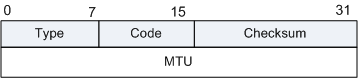
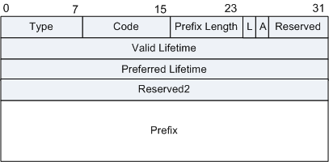

| Type |
1字节 |
消息类型，此处值为134。 |
| Code |
1字节 |
该ICMPv6差错报文的始发者必须将该字段置为0，且接收端忽略该字段。 |
| Checksum |
2字节 |
用来在ICMPv6报文中检验数据和部分IPv6首部的完整性。 |
| Cur Hop Limit |
1字节 |
8位无符号整数。默认值应当放置在发出IP分组的IP首部的Hop Count字段中。 取0值意味着未(由该路由器)规定。 |
| M |
1比特 |
1位“管理地址配置”标记。当置1时，它指出地址可通过Dynamic Host Configuration协议获得。
如果M标记置1，则O标记为冗余，可以忽略，因为DHCPv6将返回所有可用配置信息。
|
| O |
1比特 |
1位“其他配置”标记。
当M=0且O=1时，指示其他配置信息可通过DHCPv6获得。例如，这类信息包括DNS相关信息或关于网络内其他服务器的信息。
如果M=0且O=0，指示没有信息可通过DHCPv6获得。
|
| Reserved |
6比特 |
6位未使用字段。它必须由发送者初始化为0，接收者必须忽略它。 |
| Router Lifetime |
2字节 |
16位无符号整数。与默认路由器关联的生存期，以秒为单位。最大值18.2小时。取0值的Lifetime指出路由器不是默认路由器并且不应当出现在默认路由器列表中。Router
Lifetime仅适用于作为默认路由器的路由器应用；对包括在其他消息字段或选项中的信息不适用。需要对它们的信息规定时间限制的选项有它们自己的生存期字段。 |
| Reachable Time |
4字节 |
32位无符号整数。此时间以毫秒计，在收到可达性确认后节点假定该邻居是可到达的。它由Neighbor Unreachability
Detection算法使用(参阅第7-3节)。此值为0意味着没有(由此路由器)作出规定。 |
| Retrans Timer |
4字节 |
32位无符号整数。重发的Neighbor Solicitation消息间隔时间，以毫秒计。由地址解析和Neighbor
Unreachability Detection算法使用。此值为0意味着没有(由此路由器)作出规定。 |
| Options |
可变 |
选项Source link-layer address：源链路层地址，发出Router Advertisement的接口的链路层地址。仅在有地址的链路层上使用。路由器可以忽略此选项，以便能够使入境负载跨多个链路层地址共享。
为TLV格式，各字段含义如下：
- Type: = 1，长度是1字节。
- Length: 1字节，选项的长度(包括类型字段和长度字段)，以8字节为单位计算。例如，IEEE802 地址的长度是1。
- Link-Layer Address: 可变长度的链路层地址。此字段的内容和形式(包括字节和比特顺序)一般由描述IPv6在不同链路层上如何运行的特定文件中规定。
MTU：在有可变MTU的链路上应当按此发送流量(正如在描述特定链路类型上如何 运行IP的文件中规定的)。可以按此在其他链路上发送流量。
MTU格式：
图2 MTU选项的格式

- Type = 5
- Length = 1
- Reserved: 此字段未使用。它必须被发送者初始化为0，接收者必须忽略它。
- MTU: 32位无符号整数。是为此链路推荐的MTU。
Prefix Information：这些选项规定了前缀，这些前缀是on-link的，和/或被用于地址自动配置。路由器应当包括所有它的on-link前缀(链路本地前缀除外)，所以多归属第主机有
完整的前缀信息，这些前缀是关于主机们附着的链路的on-link目的地的。如果缺乏完整信息，当发送流量到它的邻居们时，多归属地主机或许不能够选择正确的出接口。
格式如下：
图3 Prefix选项格式

- Type: = 3
- Length: = 4
- Prefix Length: 8位无符号整数。在合法前缀中领先比特的数目。其值范围是0到128。前缀长度字段为on-link确定提供必须的信息(当与前缀信息选项中L标记相结合时)。它也帮助实现地址自动配置，对此存在更多关于前缀长度的限制。
- L: 1位on-link标记。当置1时，指出此前缀可用于on-link确定。当没有置1时，通告对此前缀的on-link或off-link性质没有说明。换句话讲，如果L标记没有置1，主机不能推断出从该前缀引申出的地址是off-link。即，主机不能更新先前关于地址是on-link的指示。
- A: 1位自动地址配置标记。当置1时，指出此前缀可用于无状态地址自动配置。
- Reserved1: 6位未使用字段。必须被发送者初始化为0，接收者必须忽略它。
- Valid Lifetime: 32位无符号整数。时间长度以秒为单位(相对于分组被发送的时间)，在此时间内此前缀对于on-link确定来说是合法的。全1比特值(0xffffffff)表示无限。
- Preferred Lifetime: 32位无符号整数。时间长度以秒为单位(相对于分组被发送的时间)。在此时间 内经无状态地址自动配置，根据此前缀生成的地址保有优先权[ADDRCONF]。全1比特值(0xffffffff)表示无限。注意，此字段的值不能超过Valid
Lifetime字段的值，以避免优先的地址不再合法。
- Reserved2: 此字段未使用。它必须被发送者初始化为0，接收者必须忽略它。
- Prefix: IP地址或IP地址的前缀。Prefix Length字段包含此前缀中有效领先比特的数目。在前缀中，在前缀长度之后的这些位被保留，并且必须被发送者初始化为0，接收者必须忽略它们。路由器不应当发送链路本地前缀的前缀选项，主机应当忽略这种前缀选项。
|